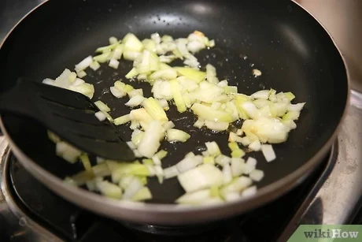
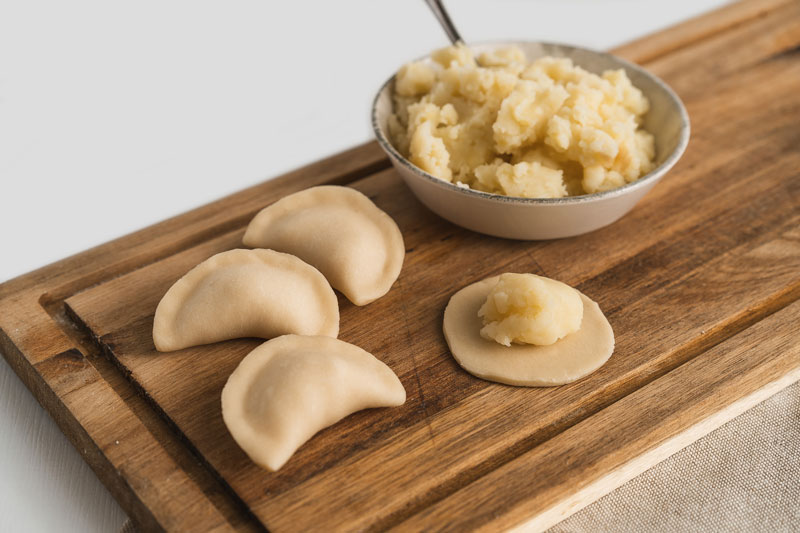

Peel and boil the potatoes until soft. Mash them and season with salt and pepper.
If using onion, sauté finely chopped onion in butter until golden, and mix it into the mashed potatoes.
Set the filling aside to cool.

In a large bowl, combine the flour and a pinch of salt.
Add the egg, water (or milk), and vegetable oil. Mix everything until a soft dough forms.
Knead for about 5-7 minutes until smooth. Cover the dough with a towel and let it rest for 20-30 minutes.
Roll the dough out on a floured surface to about 2-3 mm thick. Cut out circles using a glass or cookie cutter.
Place a small amount of filling in the center of each circle, fold the dough in half,
and pinch the edges tightly to seal the varenik.

Bring a large pot of salted water to a boil. Drop the vareniki into the water in batches,
making sure they don't stick to each other. Cook for 3-5 minutes, or until they float to the surface.
Remove the vareniki with a slotted spoon, drain, and serve with melted butter, sour cream, or fried onions.